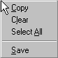
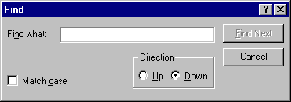

The output pane is a horizontal pane at the bottom of the frame window. It contains certain diagnostic messages as well as the output of all external applications launched by the Configuration Tool.
A pop-up context menu is accessible by means of a right-click anywhere in the output pane:

Using the context menu you can:
Copy the selection to the clipboard
Clear the output pane
Select the entire output pane for copying
Save the current contents of the pane to a file
The same operations are available from the main frame Edit menu.
You can search for text within the output pane by
using the Edit->Find menu item or equivalent toolbar
button:
while the output pane has the focus. This causes a standard find dialog to be displayed:
